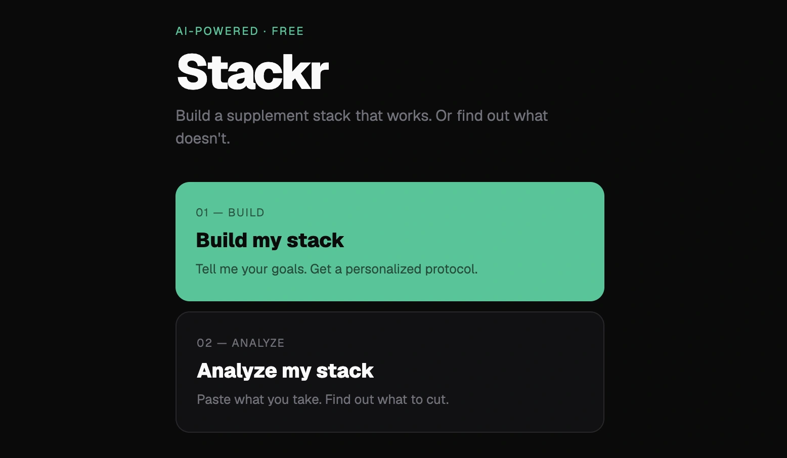

AI Web App · Personal Project
Stackr
Which supplements fit my goals, and which ones are worth a place in my budget?
As wellness became a bigger part of the conversation among people my age, I saw plenty of brands explaining why I should buy their product. It was harder to decide whether it filled a gap in my routine or duplicated something I was already paying for. I built Stackr with Claude Code and originally hosted it on Vercel to help people think through that purchase.

Two Ways to Use Stackr
Build my stack
Choose a primary goal, such as strength or focus, select any concerns, and set a monthly budget. You can also enter supplements you already take. Stackr uses those inputs to generate a personalized starting plan, so someone with $50 to spend can start with that constraint.
Analyze my stack
If you already have a routine, paste the products you take, including doses and timing, and optionally add your goals. The AI reviews that list and suggests what to reconsider. It gives you a way to question a recurring purchase before your next refill.